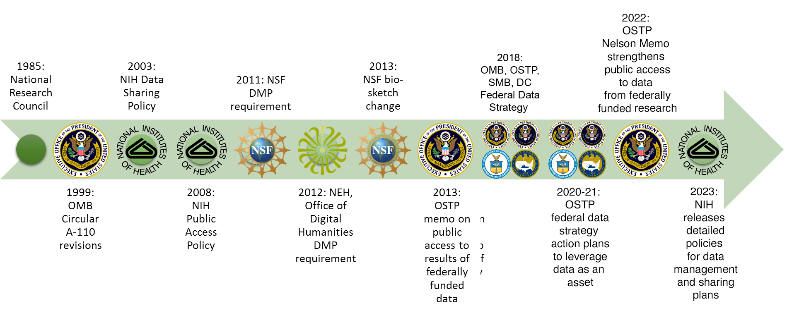

Data Management in the
Research Environment
Research Environment
RSM 674 Spring
Dr. Timothy Norris - Data Curation Fellow - tnorris@miami.edu
Angela Clark - Librarian Associate Professor RSMAS - aclark@rsmas.miami.edu
Angela Clark - Librarian Associate Professor RSMAS - aclark@rsmas.miami.edu
Course Overview
- Why manage data / what is data management
- Data lifecycle and data management plans
- Data types, stages and formats
- Data organization / tips, tools and techniques
- Intellectual property and licensing
- Research data profiles
- Contextual Metadata
- Software carpentry: command line, python, and r
- Sharing data, data repositories and data preservation
what you expect / what we expect
syllabus review
- Two credit course - moderate load - reading most weeks with a few breaks
- Two major assignments
- Midterm assignment: written document based on ongoing research either in your advisors lab or in a colleagues lab. DUE WEEK 8 (30% OF GRADE)
- Final Assignment: Either a written data management plan for your research (or your lab’s research) or a dataset prepared for repository deposit. DUE FINALS WEEK (40% OF GRADE)
NOTE: there is no final exam
- Several minor assignments
Class Schedule
- Week 1: Course Introduction and Overview
- Week 2: The Research Data Lifecycle
- Week 3: Data Types, Stages, and Formats
- Week 4: Data Storage, Backup and Security
- Week 5: Sharing and Reuse
- Week 6: Data Curation Profiles
- Week 7: Introduction to BASH Shell
- Week 8: Metadata and Contextual Details
- Week 9: Versioning and Git
- Week 10: Introduction to R
- Week 11: Finding and Cleaning Data
- Week 12: Introduction to Python
- Week 13: Repository Identification
- Week 14: The Semantic Web
- Finals Week:
[ Turn in Assignment #1 ]
[ Turn in Assignment #2 ]
[ Turn in Midterm Project ]
[ Turn in Assignment #3 ]
[ Turn in Assignment #4 ]
[ Turn in Assignment #5 ]
[ Turn in Final Project ]
This class IS:
- about interdisciplinary problem solving
- personal and professional practice
- broad thinking
This class IS NOT:
- computer science
- database adiminstration
- research methods (how to collect data)
your participation ...
... is important
10% OF GRADE
10% OF GRADE
Big Data
Source: John Gantz, IDC Corporation: The Expanding Digital Universe
slide from

Data Growth
Gantz, J., & Reinsel, D. (2012). The Digital Universe in 2020: Big Data, Bigger Digital Shadows, and Biggest Growth in the Far East.
Retrieved from https://www.emc.com/collateral/analyst-reports/idc-the-digital-universe-in-2020.pdf. page 3.
Retrieved from https://www.emc.com/collateral/analyst-reports/idc-the-digital-universe-in-2020.pdf. page 3.
Navarro, Fran (2014). Foco en Almacenamiento. http://www.slideshare.net/franmod/tendencias-storage. Slide 42.
Data Deluge
Data is collected from sensors, sensor networks, remote sensing, observations, and more - this calls for increased attention to data management and stewardship
slide from
The Data Deluge
Data Sharing Requirements
- NIH: October 2003
Data Management Requirements
- NSF: January 2011
- NEH: June 2011
The 2013 OSTP Memo: Open Data
- Federally funded research results should be made accessible to the public
- Both peer-reviewed publications and data
What is Data Management?
Data?
Numbers
Words
Citations / references
Notebooks / marginalia
Specimens
Field Samples
Images
Videos / sound recording
Relationships
Models
Code
Words
Citations / references
Notebooks / marginalia
Specimens
Field Samples
Images
Videos / sound recording
Relationships
Models
Code
What is Data Management?
Data?
“Examples of Research Data and Materials include laboratory notebooks, notes of any type, photographs, films, digital images, original biological and environmental samples, protocols, numbers, graphs, charts, numerical raw experimental results, instrumental outputs from which Research Data can be derived and other deliverables under sponsored agreements.”
What is Data Management?
Data?
Definitions: The term “Research Data” in this document refers to information recorded and/or collected for research performed at or under the auspices of the University regardless of the form or the media upon which it is recorded. This term includes, but is not limited to, computer programs (code and documentation), computer databases, instrumental outputs, raw numerical results, original biological or environmental samples, photographs, digital images, films, protocols, graphs, and other deliverables produced under sponsored agreements. Research Data also includes any records related to the design, conduct or reporting of the research that would be necessary to reconstruct the reported research results. Research data can be intangible (statistics, findings, conclusions, etc.) and tangible (notebooks, printouts, etc.).
What is Research Data?
“Unlike other types of information, research data are collected, observed, or created, for the purposes of analysis to produce and validate original research results.”
University of Edinburgh
MANTRA Research Data Management Training,
‘Research Data Explained’
http://datalib.edina.ac.uk/mantra/
MANTRA Research Data Management Training,
‘Research Data Explained’
http://datalib.edina.ac.uk/mantra/
Whitmire, Amanda L. (2014). Research Data Management Curriculum, Lecture 1: Introduction to Research Data Management. Oregon State University Libraries.
Retrieved 11/04/2015 from: http://figshare.com/articles/GRAD521_Research_Data_Management_Lectures/1003835
Research Data is:
“…the recorded factual material commonly accepted in the scientific community as necessary to validate research findings, but not any of the following: preliminary analyses, drafts of scientific papers, plans for future research, peer reviews, or communications with colleagues. This "recorded" material excludes physical objects (e.g., laboratory samples).”
Whitmire, Amanda L. (2014). Research Data Management Curriculum, Lecture 1: Introduction to Research Data Management. Oregon State University Libraries.
Retrieved 11/04/2015 from: http://figshare.com/articles/GRAD521_Research_Data_Management_Lectures/1003835
Why Manage Data
- Productivity
- Publishing
- Knowledge creation
- Career advancement
- Compliance
- Grant writing
- University policy
- Research Ethics
¿SOMETHING ELSE?
The World of Data Around Us: Data Loss
- Natural disaster
- Facilities infrastructure failure
- Storage failure
- Server hardware/software failure
- Application software failure
- External dependencies (e.g. PKI failure)
- Format obsolescence
- Legal encumbrance
- Human error
- Malicious attack by human or automated agents
- Loss of staffing competencies
- Loss of institutional commitment
- Loss of financial stability
- Changes in user expectations and requirements

slide from
Poor Data Management Affects Everyone
“MEDICARE PAYMENT ERRORS NEAR $20B” (CNN) December 2004 Miscoding and Billing Errors from Doctors and Hospitals totaled $20,000,000,000 in FY 2003 (9.3% error rate) . The error rate measured claims that were paid despite being medically unnecessary, inadequately documented or improperly coded. In some instances, Medicare asked health care providers for medical records to back up their claims and got no response. The survey did not document instances of alleged fraud. This error rate actually was an improvement over the previous fiscal year (9.8% error rate).
“AUDIT: JUSTICE STATS ON ANTI-TERROR CASES FLAWED” (AP) February 2007 The Justice Department Inspector General found only two sets of data out of 26 concerning terrorism attacks were accurate. The Justice Department uses these statistics to argue for their budget. The Inspector General said the data “appear to be the result of decentralized and haphazard methods of collections … and do not appear to be intentional.”
“OOPS! TECH ERROR WIPES OUT Alaska Info” (AP) March 2007 A technician managed to delete the data and backup for the $38 billion Alaska oil revenue fund – money received by residents of the State. Correcting the errors cost the State an additional $220,700 (which of course was taken off the receipts to Alaska residents.)
slide from
courtesy of BLM
courtesy of BLM
Poor Science Data Management Example
A wildlife biologist for a small field office was the in-house GIS expert and provided support for all the staff’s GIS needs. However, the data was stored on her own workstation. When the biologist relocated to another office, no one understood how the data was stored or managed.
Solution: A state office GIS specialist retrieved the workstation and sifted through files trying to salvage relevant data.
Cost: 1 work month ($4,000) plus the value of
data that was not recovered
Solution: A state office GIS specialist retrieved the workstation and sifted through files trying to salvage relevant data.
Cost: 1 work month ($4,000) plus the value of
data that was not recovered
Consider that the situation could have been worse, because the data was not being backed up as it would have been if stored on a server.
slide from
Poor Data Management Federal Agency Example
In preparation for a Resource Management Plan, an office discovered 14 duplicate GPS inventories of roads. However, because none of the inventories had enough metadata, it was impossible to know which inventory was best or if any of the inventories actually met their requirements.
Solution: Re-Inventory roads
Cost: Estimated 9 work months/inventory
@$4,000/wm
(14 inventories = $504,000)
Solution: Re-Inventory roads
Cost: Estimated 9 work months/inventory
@$4,000/wm
(14 inventories = $504,000)
slide from
Importance of Data Management
“Please forgive my paranoia about protocols, standards, and data review. I'm in the latter stages of a long career with USGS (30 years, and counting), and have experienced much. Experience is the knowledge you get just after you needed it.
Several times, I've seen colleagues called to court in order to testify about conditions they have observed.
Without a strong tradition of constant review and approval of basic data, they would've been in deep trouble under cross-examination. Instead, they were able to produce field notes, data approval records, and the like, to back up their testimony.
It's one thing to be questioned by a college student who is working on a project for school. It's another entirely to be grilled by an attorney under oath with the media present.”
Several times, I've seen colleagues called to court in order to testify about conditions they have observed.
Without a strong tradition of constant review and approval of basic data, they would've been in deep trouble under cross-examination. Instead, they were able to produce field notes, data approval records, and the like, to back up their testimony.
It's one thing to be questioned by a college student who is working on a project for school. It's another entirely to be grilled by an attorney under oath with the media present.”
- Nelson Williams, Scientist
US Geological Survey
US Geological Survey
slide from
Importance of Data Management
The climate scientists at the centre of a media storm over leaked emails were yesterday cleared of accusations that they fudged their results and silenced critics, but a review found they had failed to be open enough about their work.
slide from
Why Manage Data?
From this ...

{kind=link}
... to this ...

... to this!!

Reading for Next Class
- Holdren, J (2013). Increasing Access to the Results of Federally Funded Scientific Research. Office of Science and Technology Policy, Executive Office of the President https://obamawhitehouse.archives.gov/sites/default/files/microsites/ostp/ostp_public_access_memo_2013.pdf
- National Science Foundation. Dissemination and Sharing of Research Results. http://www.nsf.gov/bfa/dias/policy/dmp.jsp. Read only the sharing and data management sections.
Highly Recomended:
- Karasti, H., Baker, K. S., & Halkola, E. (2006). Enriching the Notion of Data Curation in E-Science: Data Managing and Information Infrastructuring in the Long Term Ecological Research (LTER) Network. Computer Supported Cooperative Work (CSCW), 15(4), 321-358. https://dx.doi.org/10.1007/s10606-006-9023-2.
- Posner, (2013). "Embarrassments of riches: managing research assets." http://miriamposner.com/blog/?p=982.
- Gantz, J., & Reinsel, D. (2012). "The Digital Universe in 2020: Big Data, Bigger Digital Shadows, and Biggest Growth in the Far East." Retrieved from https://www.emc.com/collateral/analyst-reports/idc-the-digital-universe-in-2020.pdf.
The Data Management Nightmare
Karen Hanson, Alisa Surkis, and Karen Yacobucci, NYU Health Sciences Libraries
https://www.youtube.com/watch?v=N2zK3sAtr-4
https://www.youtube.com/watch?v=N2zK3sAtr-4
Why Manage Data
Researcher Perspective
Researcher Perspective
- Manage your data for yourself:
- Keep yourself organized – be able to find your files (data inputs, analytic scripts, outputs at various stages of the analytic process, etc)
- Track your science processes for reproducibility – be able to match up your outputs with exact inputs and transformations that produced them
- Better control versions of data – identify easily versions that can be periodically purged
- Quality control your data more efficiently
slide from
Why Manage Data
Researcher Perspective
Researcher Perspective
- Make backups to avoid data loss
- Format your data for re-use (by yourself or others)
- Be prepared: Document your data for your own recollection, accountability, and re-use (by yourself or others)
- Prepare it to share it – gain credibility and recognition for your science efforts!
slide from
Why Manage Data
Foundation to Advance Science
Foundation to Advance Science
- Data is a valuable asset – it is expensive and time consuming to collect
- Data should be managed to:
- maximize the effective use and value of data and information assets
- continually improve the quality including: data accuracy, integrity, integration, timeliness of data capture and presentation, relevance and usefulness
- ensure appropriate use of data and information
- facilitate data sharing
- ensure sustainability and accessibility in long term for re-use in science
slide from
Well managed, publically accessible data is important: why?
Here are a few reasons (from the UK Data Archive):
- Increases the impact and visibility of research
- Promotes innovation and potential new data uses
- Leads to new collaborations between data users and creators
- Maximizes transparency and accountability
- Enables scrutiny of research findings
- Encourages improvement and validation of research methods
- Reduces cost of duplicating data collection
- Provides important resources for education and training
New Discoveries
A new image processing technique reveals something not before seen in this Hubble Space Telescope image taken 11 years ago: A faint planet (arrows), the outermost of three discovered with ground-based telescopes last year around the young star HR 8799.D. Lafrenière et al., Astrophysical Journal Letters.
“Planet hidden in Hubble archives” Science News
(Feb. 27, 2009)
(Feb. 27, 2009)
“The first thing it tells you is how valuable maintaining long-term archives can be. Here is a major discovery that’s been lurking in the data for about 10 years!” comments Matt Mountain, director of the Space Telescope Science Institute in Baltimore, which operates Hubble.
“The second thing its tells you is having a well calibrated archive is necessary but not sufficient to make breakthroughs — it also takes a very innovative group of people to develop very smart extraction routines that can get rid of all the artifacts to reveal the planet hidden under all that telescope and detector structure.”
“The second thing its tells you is having a well calibrated archive is necessary but not sufficient to make breakthroughs — it also takes a very innovative group of people to develop very smart extraction routines that can get rid of all the artifacts to reveal the planet hidden under all that telescope and detector structure.”
Where a majority of data end up now…

recreated from Klump et al 2006
Imagine if data were more accessible….
recreated from Klump et al 2006
Quick Review
- Lots of data, what to do with it?
- Many researcher benefits of data management
- Greater exposure of research
- Easier workflows, less frustration, more productivity
- Many scientific/social benefits of data management
- Sharing and re-use
- New discoveries
- Not managing data is NOT an option
- Cost are to high (both personal and professional)
The 2013 OSTP Memo
- Transparency and efficiency
- Growth, security, value
- Commercial re-use and innovation
- Data (from OMB Circular 110):
“Data is defined … as the digitally recorded factual material commonly accepted in the scientific community as necessary to validate research findings including data sets used to support scholarly publications, but does not include laboratory notebooks, preliminary analyses, drafts of scientific papers, plans for future research, peer review reports, communications with colleagues, or physical objects, such as laboratory specimens.”
OSTP Memo: https://obamawhitehouse.archives.gov/sites/default/files/microsites/ostp/ostp_public_access_memo_2013.pdf
OMB Circular 110: https://obamawhitehouse.archives.gov/sites/default/files/omb/assets/omb/circulars/a110/2cfr215-0.pdf (p 58).
OMB Circular 110: https://obamawhitehouse.archives.gov/sites/default/files/omb/assets/omb/circulars/a110/2cfr215-0.pdf (p 58).
Lots of sticks!!
adapted from http://bit.ly/FedOASummary
Open Data
- ‘Open Data’ is considered a (social) movement
- Open Data is related to, but not the same as, open access (publishing)
- Data cannot be copyrighted, but it can be owned
- Open Data, like Open Access, is really a misnomer in the global context
- While data may be ‘open’, many people still don’t have access to it
- Often tools and/or knowledge are not available for access to open data
- Open data is different for:
- Government: https://www.data.gov/
- Research: http://www.opendataresearch.org/
- Business ...
- Some data cannot be shared due to privacy concerns (human subjects)
- Often the term open data refers to ‘open linked data’ (we will discuss this more later in the course)
What is Open?
- Access – who can access the data? How?
- Redistribution – how is the data redistributed? Who controls?
- Reuse – How is the data documented, formatted, and packaged. Is it possible for anyone to reuse?
- Absence of technological restriction – Is there proprietary software needed?
- Attribution – Who is the author (really)? Where did the data come from (sensor)?
- Integrity – just because it is open, does not mean it is good data. Problem?
- Discrimination (against groups or beliefs) – remember all data is contextual. Might data be produced from a discriminatory stance or lead to discriminatory conclusions?
- License – How is the license distributed? Does this change if a data set grows or is a derived from another data set? Does the license propagate
FAIR Data
- Findable
- Accesible
- Interoperable
- Re-usable
read more ... https://www.force11.org/group/fairgroup/fairprinciples
Levels of Open Data
- Non-machine readable
- Machine readable but in proprietary format
- Machine readable in non-proprietary format
- Machine readable in non-proprietary format with URI and RDF
- URI – Uniform Resource Identifier
- RDF – Resource Description Framework
- These are both Internet terms (we will discuss later in the class)
- Machine readable in non-proprietary format with URI and RDF – linked to other metadata
- this last level is the requisite for the ‘semantic web’ (we will discuss later in class)
Easy to create
Hard to create
Hard to Re-use
Easy to Re-use
The Case for Open Data
- Transparency (in government, business and research)
- Democracy (better informed decisions and debates)
- Increased efficiencies in workflows and production
- Publicity campaigns and social license (like green business)
- More innovation possible
The Case against Open Data
- Privatization of public services (kind of like ‘free trade’)
- Freely available data benefits big business!!!
- Will open data be captured by big business in the guise of ‘transparency’
- Empowers the empowered even more
- How is data used? For whose interests?
- Open Data can be captured (usually by a business interest) and repurposed outside of its original research context
- Lacks sustainability, scalability and usability
- Often Open Data is promoted by volunteer time (enthusiasts, hackathons, etc)
- Who will have the means to support this in the long run?
Federal Movement Towards Open Data

Whitmire, Amanda L. (2014). Research Data Management Curriculum, Lecture 2: Introduction to Research Data Management.
Oregon State University Libraries. http://figshare.com/articles/GRAD521_Research_Data_Management_Lectures/1003835
Oregon State University Libraries. http://figshare.com/articles/GRAD521_Research_Data_Management_Lectures/1003835
Next Steps?
What is Data Management?
Actions that contribute to effective storage, preservation and reuse of data and documentation throughout the research lifecycle.
Whitmire, Amanda L. (2014). Research Data Management Curriculum, Lecture 1: Introduction to Research Data Management. Oregon State University Libraries.
Retrieved 11/04/2015 from: http://figshare.com/articles/GRAD521_Research_Data_Management_Lectures/1003835
Retrieved 11/04/2015 from: http://figshare.com/articles/GRAD521_Research_Data_Management_Lectures/1003835
Data Management is not
Data science
Computational science
Database administration
A research method:
Computational science
Database administration
A research method:
- what data to collect
- how to collect them
- how to design an experiment
Whitmire, Amanda L. (2014). Research Data Management Curriculum, Lecture 1: Introduction to Research Data Management. Oregon State University Libraries.
Retrieved 11/04/2015 from: http://figshare.com/articles/GRAD521_Research_Data_Management_Lectures/1003835
Retrieved 11/04/2015 from: http://figshare.com/articles/GRAD521_Research_Data_Management_Lectures/1003835

What is DATA Management?
Data?
Numbers
Words
Citations / references
Notebooks / marginalia
Specimens
Field Samples
Images
Videos / sound recording
Relationships
Models
Code
Words
Citations / references
Notebooks / marginalia
Specimens
Field Samples
Images
Videos / sound recording
Relationships
Models
Code
Data Management?
File System Organization
File Naming Conventions
Privacy/Security Considerations
File Format Choice
Documentation and metadata
Roles and responsibilities in research environment
Storage and backup strategies
Acquiring and cleaning data
Sharing and collaboration strategies
Ownership of data
Access strategies / Access restrictions
Data publication / Data citation
File Naming Conventions
Privacy/Security Considerations
File Format Choice
Documentation and metadata
Roles and responsibilities in research environment
Storage and backup strategies
Acquiring and cleaning data
Sharing and collaboration strategies
Ownership of data
Access strategies / Access restrictions
Data publication / Data citation
¿TOOLS?
¿VISUALIZATION?
Research Data Management
Before: Data Management Planning / Grant Process
During: Compliance and Productivity
After: Publication and/or Repository Deposit
During: Compliance and Productivity
After: Publication and/or Repository Deposit
Before: Data Management Planning / Grant Process
During: Compliance and Productivity
After: Publication and/or Repository Deposit
During: Compliance and Productivity
After: Publication and/or Repository Deposit
Privacy/Security Considerations
Storage and backup strategies
File System Organization
File Naming Conventions
File Format Choice
Documentation and metadata
Roles and responsibilities in research environment
Sharing and collaboration strategies
Ownership of data
Access strategies / Access restrictions
Storage and backup strategies
File System Organization
File Naming Conventions
File Format Choice
Documentation and metadata
Roles and responsibilities in research environment
Sharing and collaboration strategies
Ownership of data
Access strategies / Access restrictions
Before: Data Management Planning / Grant Process
During: Compliance and Productivity
After: Publication and/or Repository Deposit
During: Compliance and Productivity
After: Publication and/or Repository Deposit
Follow file naming, organization and format conventions
Documentation and metadata
Acquiring and cleaning data
Regularly backup all data
Be mindful when sharing / version control
Access / privacy policy enforcement
Documentation and metadata
Acquiring and cleaning data
Regularly backup all data
Be mindful when sharing / version control
Access / privacy policy enforcement
Before: Data Management Planning / Grant Process
During: Compliance and Productivity
After: Publication and/or Repository Deposit
During: Compliance and Productivity
After: Publication and/or Repository Deposit
Publish
Deposit in a repository
Deposit in a repository
Reading for Next Class
- Choose a DMP to read from https://dmptool.org/public_dmps.
NOTE: “They are not vetted for quality, completeness, or adherence to funder guidelines.” - If your research lab has an existing DMP bring it to class
- Office of Management and Budget (2013). Open Data Policy—Managing Information as an Asset.
- https://obamawhitehouse.archives.gov/sites/default/files/omb/memoranda/2013/m-13-13.pdf
alternate html: https://project-open-data.cio.gov/policy-memo/
- Committee on Ensuring the Utility and Integrity of Research Data in a Digital Age (2009). “Promoting the Stewardship of Research Data” (Chap 4) in Ensuring the Integrity, Accessibility, and Stewardship of Research Data in the Digital Age. National Academies Press, Washington D.C.
- http://www.nap.edu/catalog/12615/ensuring-the-integrity-accessibility-and-stewardship-of-research-data-in-the-digital-age
Bring DMP for this coming Wednesday January 25th!!!
for next week